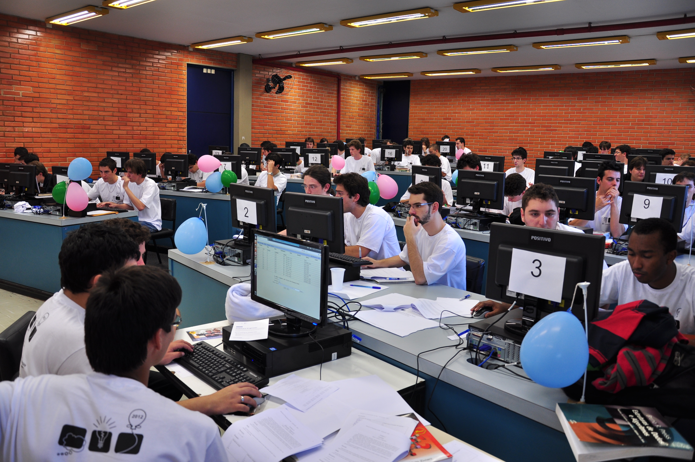

Maratona nas Instituições de Ensino(){
8a edição:
Capa
Por: Guilherme Castiho Casassanta
Maratona de Programação
A Maratona de Programação é um evento oficial desde 1996 pela Sociedade Brasileira de Computação (SBC). Este evento se destina a alunos de graduação e inicio em pós-graduação dos mais diversos cursos, como por exemplo Bacharelado em Ciência da Computação, Sistema de Informação, Engenharia Elétrica., dentre outros.
Diversas Universidade Federais, empresas e Instituições de Ensino Privado desenvolvem maratonas de programações locais, algumas com o intuito de preparação para maratonas de maior relevância, como por exemplo a Universidade Federal de Uberlândia (UFU), Universidade Federal de Bahia (UFBA), Universidade Presidente Ântonio Carlos (UNIPAC) e a Companhia de Telecomunicações do Brasil Central (CTBC).
Em geral as maratonas promovidas pelas diversas entidades consistem em expor aos participantes uma prova com problemas desafiadores onde estes devem ser resolvidos usando alguma linguagem de programação. Na medida que o problema é resolvido o aluno ou time ganham uma pontuação e sobem no ranking, no final é gerado um ranking com os alunos ou times que conseguirem solucionar mais problemas em menos tempo.

Ao estar participando da maratona o estudante amplia seus conhecimentos sobre sua área de atuação uma vez que esta abrange diversas disciplinas de sua formação, como exemplo além de precisar ter conhecimento de alguma(s) linguagem(ns) de programação, conhecimento de otimização de código, análise do problema para a construção do melhor algoritmo viável são fatores que podem fazer diferença na escolha de um time campeão, mas independente de quem vença os concursos, o aprimoramento do conhecimento adquirido nas pesquisas e práticas ficam pra vida toda.
Neste ano a maratona de programação promovida pela SBC chega a sua décima oitava edição e terá sua primeira fase no dia 14 de setembro e as finais agendadas para os dias 8 e 9 de novembro. Para participar basta seguir as informações no site: Maratona SBC até o dia 31 de agosto.
Referências:
Sociedade Brasileira de Computação
Maratona UNIPAC
Maratona CTBC
Maratona SBC
}